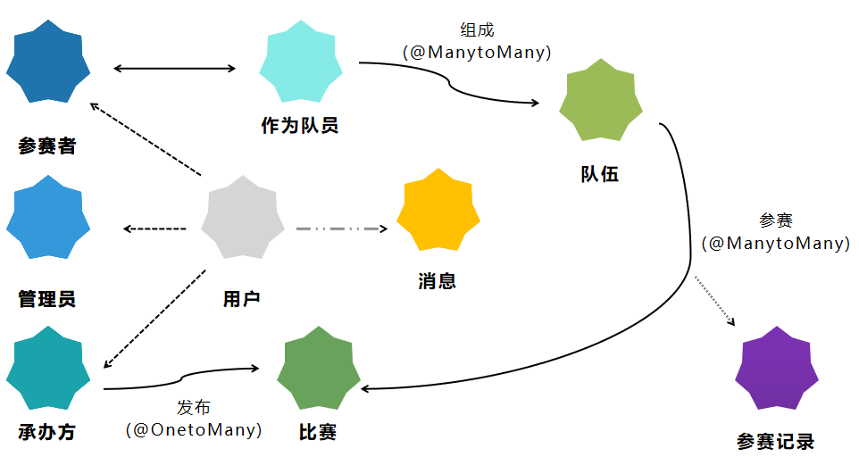

重难点问题及解决方法
面向用户类型的工作解耦
由于我们有多种不同的用户，在实际应用环境中，当某一方网站需要进行维护时，另一方能继续使用自己需要的相关功能而不受影响，管理员平台具有严格的权限控制。另外，为了实现开发过程中便于分工，我们也需要将前端功能合理分成两大块：用户平台和管理员平台。
复杂关系在数据库中的处理
- 由于平台逻辑关系的复杂性和强关联性，不同表中存储的相同数据可能出现数据不一致现象。解决办法为为这类数据添加外键，防止子表引用父表中不存在的表项，并添加级联，使得父表项更新或删除时子表项会自动更新和删除。这里需要注意一对多和多对多的关系处理，具体如下图。 
- 除了前面提到的使用外键和将关系抽离出来之外，还要尽量减少内存中不必要的拷贝，能从数据库读取的就不要留下；例如对“某个队伍参加某比赛”这一行为的记录就不要单独记录比赛名称（String）之类的信息，而是保存指针，不然活动更改名字了就比较难保证一致性。
定时变更状态
- 如何实现定时的持久化和时间到了自动变更比赛状态（如“可报名“，“已结束”）是一大难题。我们实现了一个定时器，到0点00分1秒时更新状态，这样就能保证每个比赛各阶段的衔接是准确无误的。
后端接口的高效率编写
- 由于我们采用了restful风格的接口设计，相比于graphQL之类可以定制接口类型的风格来说开发效率相对较低，对于前端需要的每个接口都需要单独定制数据格式。经过一段时间的摸索，我们确定了一种开发模式：利用java的流式操作筛选与处理数据，利用HashMap类将实例的一部分属性编写成Map
后端项目部署相关
- springboot项目在服务器上的部署，我们采用了连依赖项打包成jar包的解决方案。途中遇到了一些困难，例如网上的教程大多是基于maven的项目build策略，使用gradle的实例很少。同时，示例本身质量也参差不齐。最终解决方案非常简单，只需要在项目根目录下执行gradlew build就可以打包项目以及所有依赖，但网上教程少有提及。
- 服务器端与本地的一个重要区别在于路径分隔符。在保存、传输文件的过程中，需要获得目标路径的绝对路径用来保存文件，但windows系统的绝对路径分隔符是反斜杠"\"，服务器端则是斜杠"/"，在整个项目开发过程中为保证生产与开发环境均能运行，需要有两套不同的路径系统。最后我们的解决方案是开设另一个新的分支bhuguu_server，并在开发分支bhuguu每次pull request的同时diff bhuguu_server手动merge。
电子邮件服务
- 为了实现学生在校身份检验，我们借助网易163邮箱提供的smtp协议开发了邮件发送服务，用来向学生邮箱发送验证码及获奖证书等。缺点之一在于教育网邮箱审核严格，有一定的退信率，并且收邮件所需时间较长。
获奖证书编写
- 对于获奖证书编写，我们采取的解决方案是pdf表单。利用acrobat DC软件生成pdf表单模板，再利用java的itext包填写表单并打印最终获奖证书，生成的获奖证书可以通过邮件发送到学生端，也可以通过获奖编号和真实姓名进行下载。